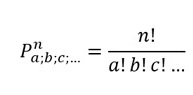
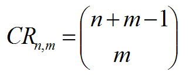

Permutaciones y Combinaciónes
Las permutaciones son agrupaciones en las que importa el orden de los objetos. Las combinaciones son agrupaciones en las que el contenido importa, pero el orden no. Dos eventos son dependientes si el estado original de la situación cambia de un evento al otro, y esto altera la probabilidad del segundo evento.
Permutaciones con Repetición
Son las más fáciles de calcular. Si tienes n cosas para elegir y eliges r de ellas, las permutaciones posibles son:
n × n × ... (r veces) = nr Porque hay n posibilidades para la primera elección, después hay
n posibilidades para la segunda elección, y así hasta llegar a la última posición.
La fórmula para calcular las permutaciones con repetición es la siguiente:

Permutación sin Repetición
Son los distintos grupos de elementos que se pueden hacer, de forma que dos grupos se diferencian únicamente en el orden de colocación de los elementos. En este caso, se reduce el número de opciones en cada paso.
Por ejemplo: ¿cómo podrías ordenar 16 bolas de billar? Después de elegir por ejemplo la "14" no puedes elegirla otra vez. Así que tu primera elección tiene 16 posibilidades, y tu siguiente elección
tiene 15 posibilidades, después 14, 13, etc. Y el total de permutaciones sería:
16 × 15 × 14 × 13 ... = 20.922.789.888.000
Pero a lo mejor no quieres elegirlas todas, sólo 3 de ellas, así que sería solamente:
16 × 15 × 14 = 3360
Es decir, hay 3.360 maneras diferentes de elegir 3 bolas de billar de entre 16 Nuestro "ejemplo de elegir en orden 3 bolas de 16" sería:
16! = 16! = 20.922.789.888.000 = 3360
(16−3)! 13! 6.227.020.800
¿De cuántas maneras se pueden dar primer y segundo premio entre 10 personas?
10! = 10! = 3.628.800 = 90
(10−2)! 8! 40.320
(que es lo mismo que: 10 × 9 = 90).
La fórmula para calcular las permutaciones sin repetición es la siguiente:
Combinaciones con repetición
En este tipo de combinaciones, se puede repetir el número de opciones a elegir. Por ejemplo, si se tiene una cantidad de 10 opciones entre las que hay que elegir 6, las combinaciones también incluyen aquellas en las que incluso, todas las 6 opciones a elegir son únicamente una opción de entre las 10. La fórmula para calcular las combinaciones con repetición es la siguiente:
Así funciona la lotería. Los números se eligen de uno en uno, y si tienes los números de la suerte (da igual el orden) ¡entonces has ganado! La manera más fácil de explicarlo es: imaginemos que el orden sí importa (permutaciones), después lo cambiamos para que el orden no importe.
ejemplos de combinaciones
Digamos que tenemos cinco sabores de helado: banana, chocolate, limón, fresa y vainilla. Puedes tomar 3 paladas. ¿Cuántas variaciones hay? Vamos a usar letras para los sabores: {b, c, l, f, v}. Algunos ejemplos son:
• {c, c, c} (3 de chocolate)
• {b, l, v} (uno de banana, uno de limón y uno de vainilla)
• {b, v, v} (uno de banana, dos de vainilla)
(Y para dejarlo claro: hay n=5 cosas para elegir, y eliges r=3 de ellas. El orden no importa, ¡y sí puedes repetir!)
Bien, no puedo decirte directamente cómo se calcula, pero te voy a enseñar una técnica especial para que lo averigües tú mismo.
Imagina que el helado está en contenedores, podrías decir "sáltate el primero, después 3 paladas, después sáltate los 3 contenedores siguientes" ¡y acabarás con 3 paladas de chocolate! Entonces es como si ordenaras a un robot que te trajera helado, pero no cambia nada, tendrás lo que quieres.